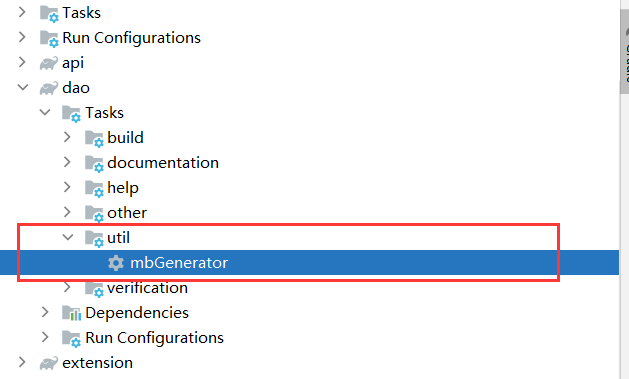
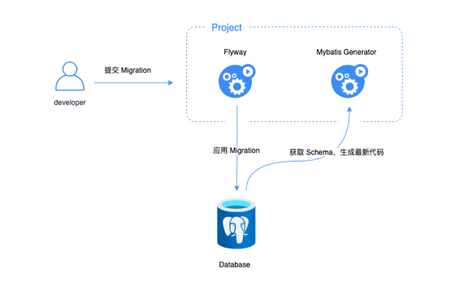

前言
关于如何集成 Mybatis Generator 从而生成代码的文章不少，但是使用 Mybatis Generator 在项目中持续生成代码的实践分享就鲜有。
这里的持续生成代码指的是每当数据库表结构有变更时，开发者都可以使用工具重新生成对应的 Model 和 Mapper 类，而不仅仅只是第一次用它生成，后面都是手动修改了。
想要做到这一点（持续生成代码）的话就得解决代码重复生成时可能引入冲突，生成的代码功能不满足需求等问题，反过来说就是工程至少需要有以下特性才能够实现持续性的代码生成
- 隔离：自动生成的代码能够以某种形式与手写的代码隔离
- 扩展性：用户不需要去修改生成的代码
- 可以修改代码生成的规则，比如通过修改配置或扩展代码生成工具等
- 能够以某种非侵入性的方式去扩展生成的代码的功能
- 一致性：生成的代码结构只和项目有关，而不会受系统环境、构建工具等外部依赖的影响
接下来就进入主题，分享一下我在集成 Mybatis、 Mybatis Generator 、Gradle 等工具实现持续生成代码时的一些实践和验证
完整项目请通过 Github 查看
Mybatis Generator 与 Gradle 的集成
由于 Mybatis Generator 官方没有提供 Gradle Plugin，所以我选择了通过社区开源的 Gradle 插件 Mybatis Generator Plugin 来集成。
集成方式很简单，首先需要在 build.gradle 中引入一下插件，并配置指定的版本
plugins {
id "com.thinkimi.gradle.MybatisGenerator" version "2.3"
}
刷新完 Gradle 以后，我们就可以在 build.gradle 中通过 mybatisGenerator 块来配置运行时依赖的 JDBC 驱动、mybatis-generator-core 以及代码生产的规则文件
mybatisGenerator {
verbose = true
configFile = 'src/main/resources/mybatis-generator.xml'
dependencies {
mybatisGenerator group: 'org.mybatis.generator', name: 'mybatis-generator-core', version: '1.4.0'
mybatisGenerator group: 'mysql', name: 'mysql-connector-java', version: '8.0.25'
}
}
mybatis-generator.xml 就是 Mybatis Generator 依赖的规则配置，在该文件中可以配置
- 生成的代码类型，比如 Mybatis3，Mybatis3Simple 和 Mybatis3DynamicSql 等
- 数据库的 URL、用户名、密码等
- 数据库字段与对象字段的映射规则
- 生成的代码文件存放路径
- ……
更多详细的配置请参考官方文档 ，下面展示了一个简单的 Demo 配置，完整 配置示例可以通过 GitHub 查看
<!DOCTYPE generatorConfiguration PUBLIC
"-//mybatis.org//DTD MyBatis Generator Configuration 1.0//EN"
"http://mybatis.org/dtd/mybatis-generator-config_1_0.dtd">
<generatorConfiguration>
<context id="simple" targetRuntime="MyBatis3">
<!-- 数据库相关配置 -->
<jdbcConnection driverClass="com.mysql.cj.jdbc.Driver"
connectionURL="jdbc:mysql://localhost:3306/user" userId="root" password="123456"/>
<!-- 生成代码存放路径和包名 -->
<javaModelGenerator targetPackage="cc.cc1234.generate.model" targetProject="src/main/java"/>
<javaClientGenerator type="ANNOTATEDMAPPER" targetPackage="cc.cc1234.generate.mapper" targetProject="src/main/java"/>
<!-- 表与实体的映射关系配置 -->
<table tableName="user" domainObjectName="UserEntity">
<!-- 字段类型映射 -->
<columnOverride column="gender" javaType="cc.cc1234.enums.Gender"
typeHandler="org.apache.ibatis.type.EnumTypeHandler"/>
</table>
</context>
</generatorConfiguration>
这样配置完成后，Mybatis Generator Plugin 会自动创建一个名为 mbGenerator 的 Gradle Task，执行该 Task 就能生成对应的 Entity 和 Mapper 代码文件，这部分通过工具自动生成的代码文件在后面都会称之为 Generated Code。

Generated Code 的隔离
目前所有的 Generated Code 都是存放在一个 targetProject （src/main/java）下，通过包路径 cc.cc1234.generate 来区分这些文件是不是由工具自动生成的。
通过包路径的方式来隔离 Generated Code 这种方式我觉得可以再优化一下，我期望是达到一种形散神不散的阻止方式，答案就是源码目录来做隔离。
那么什么是源码目录呢？一般默认的 Java 目录结构如下
project
└── src
├── main
│ ├── java
│ └── resources
└── test
├── java
└── resources
这里的 main 就是源码目录，而我要做的就是创建一个和 main 同级的目录专门用来存放 Generated Code，该目录的名称为 generator。
也就是新的项目结构就变成了下面这样
project
└── src
├── generator
│ ├── java
│ └── resources
├── main
│ ├── java
│ └── resources
└── test
├── java
└── resources
generator 目录需要做到以下两点
- generator 能够引用到 project 项目下的依赖
- main 下的代码能引用到 generator 下的代码
Gradle 中这个可以很轻松的实现， 只需要在 build.gradle 中配置 SourceSet 既可以
sourceSets {
// 将 generator 目录加入 main 所属的源码目录集合中去
main {
java.srcDirs += ['src/generator/java']
resources.srcDirs += ['src/generator/resources']
}
}
最后，再将 Mybatis Generator 的代码生成目标目录（targetProject）修改为 src/generator/java 即可
<!DOCTYPE generatorConfiguration PUBLIC
"-//mybatis.org//DTD MyBatis Generator Configuration 1.0//EN"
"<http://mybatis.org/dtd/mybatis-generator-config_1_0.dtd>">
<generatorConfiguration>
<context id="dsql" targetRuntime="MyBatis3">
<!-- ...... -->
<javaModelGenerator targetPackage="cc.cc1234.dao.generator.model" targetProject="src/generator/java"/>
<javaClientGenerator targetPackage="cc.cc1234.dao.generator.mapper" targetProject="src/generator/java" />
<!-- ...... -->
</context>
</generatorConfiguration>
这样就完全将 Generated Code 通过源码目录隔离开了。
下面是我加的一个代码生成的前置处理逻辑：先删除目录下已生成的旧代码。
mbGenerator.dependsOn {
cleanGeneratedCode
}
task cleanGeneratedCode(type: Delete) {
file("src/generator/java").list().each {
f -> delete "src/generator/java/${f}"
}
file("src/generator/resources").list().each {
f -> delete "src/generator/resources/${f}"
}
}
Generated Code 的扩展
生成的代码必然是无法满足复杂多变的业务场景的，这就需要有能在不修改 Generated Code 的前提下扩展功能的能力，在这里分为两种
- 扩展代码生成规则
- 无侵入式的扩展 Generated Code
在本文中就是扩展 Mybatis Generator 的代码生成能力和扩展已生成的 Mapper 功能。
Mybatis Generator 的扩展
Mybatis Generator 提供很丰富的扩展点，我这里就不赘述了，读者可以通过官方文档详细了解。
在我的 Demo 项目中，我基于它的扩展机制实现了以下几个插件，实现逻辑请通过 Github 查看
- Model 类使用
@Data注解替代 getter 和 setter - 全局禁用
Example方法和实体的生成 - 默认为
Insert、InsertSelective方法生成 GenerateKeys 配置 - 修改
selectByPrimaryKey方法返回类型为Optional
验证完 Mybatis Generator 的扩展能力以后，下面就该验证一下 Mapper 类的扩展了。
Mapper 的扩展
自动生成的 Mapper 类提供了简单的 CRUD 函数
- deleteByPrimaryKey
- insert
- insertSelective
- selectByPrimaryKey
- updateByPrimaryKeySelective
- updateByPrimaryKey
我刻意禁用了 XML 文件的生成，这些函数都是使用 Mybatis 自带的 Annotation 和 SqlProvider 实现的。
如果提供的函数无法满足需求，这时候就可以通过继承该 Mapper 来进行扩展，就像这样
interface UserMapper extends UserGeneratedMapper{
}
自定义 CRUD 既可以使用 Annotation，也可以使用传统的 XML
interface UserMapper extends UserGeneratedMapper{
/**
* 使用 Annotation 写 SQL
*/
@Select(value = "select * from user where deleted = false")
List<UserEntity> selectAll();
/**
* 使用 XML 写 SQL
*/
UserEntity selectByUsername(String username);
/**
* 使用 XML 写 SQL
*/
long countUser();
}
对应的 XML
<?xml version="1.0" encoding="UTF-8"?>
<!DOCTYPE mapper PUBLIC "-//mybatis.org//DTD Mapper 3.0//EN" "http://mybatis.org/dtd/mybatis-3-mapper.dtd">
<mapper namespace="cc.cc1234.dao.mapper.UserMapper">
<select id="countUser" resultType="java.lang.Long">
select count(*)
from user
</select>
<select id="selectByUsername" resultType="cc.cc1234.dao.model.UserEntity">
select *
from user
where username = #{username}
</select>
</mapper>
在 Mybatis 中 Model 对象仅仅用作承载数据，很少需要去扩展它的能力，所以这里就不考虑它的扩展方式了。
Generated Code 的一致性
完成了代码生成、隔离、扩展性的验证以后，接下来又得考虑一个团队开发时的问题：如何确保每个团队成员生成的代码是一致的？
由于 Generated Code 是基于 Database 的 Schema 来生成的，所以只要团队成员能共享一份 Schema 其实就能保证生成的代码是一致的了。
而这里就有两个方案
-
在生成代码时，成员使用一个共享的 Database，所有的数据库结构变更都应该先应用到该 Database
-
在项目中维护 Database 的 Schema 变更操作记录，成员可以通过重放历史变更操作得到最新一份最新的 Schema
这两种方案并不是互斥的，如果条件允许的话，完全可以结合起来应用。
对于维护 Database 的 Schema 变更记录，目前社区已经有了很多成熟的产品可以开箱即用，我这里选择了 Flyway 。
Flyway 将 Schema 的变更操作称之为 Migration，每个 Migration 是一个有版本标识的 SQL 文件，像下面这样
migration
├── v1__init.sql
├── v2_1__user_table.sql
├── v2_2__order_table.sql
└── v3__order_item_table.sql
Flyway 会自动应用这些 SQL 文件，并记录当前使用到的版本。
这样，成员就算在本地开发也可以得到一个与当前生产环境一致的 Database Schema 了。

如果你的生产不允许通过 Flyway 来应用 SQL 的话，那么你可以选择在生产环境禁用Flyway，但是在本地和开发环境继续启用。
关于 Flyway 的集成细节的话这里就不展示了，可以直接通过 Github 查看项目配置
总结
到目前为止， 基本实现了使用 Mybatis Generator 来做代码的持续生成。
不过目前的优化点其实还蛮多的
- 在生成的 Mapper 中已经为实体定义了 ResultMap，但是没有生成 ID，后续可以考虑生成一个 ID，这样扩展的 XML 里就不需要再重复写 ResultMap，直接引用 ID 即可
- 提供一个更通用的 CRUD 基础 Mapper 的实现
还有，XML 目前不能自动生成的，因为文件的映射是和类作了强绑定，限制了扩展能力。
如果要支持生成 XML 的话，目前有两个想法（没有深入思考，有空了再尝试一下吧）
- XML 中 mapper.namespce 指向一个通用路由 Mapper
- 一个 Mapper 可以对应多个 XML 文件，在 Mybatis 启动时做合并
对了，Mybatis Generator 也支持生成 Mybatis Dynamic SQL 的代码，可以参考我上一篇文章《纵享丝滑，Mybatis-Dynamic-Sql 集成体验》。